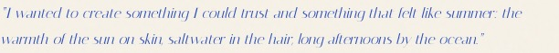
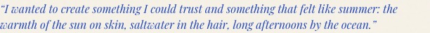
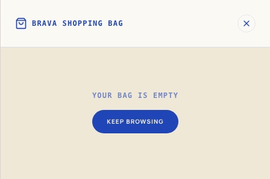
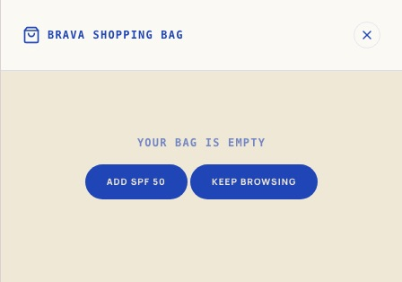
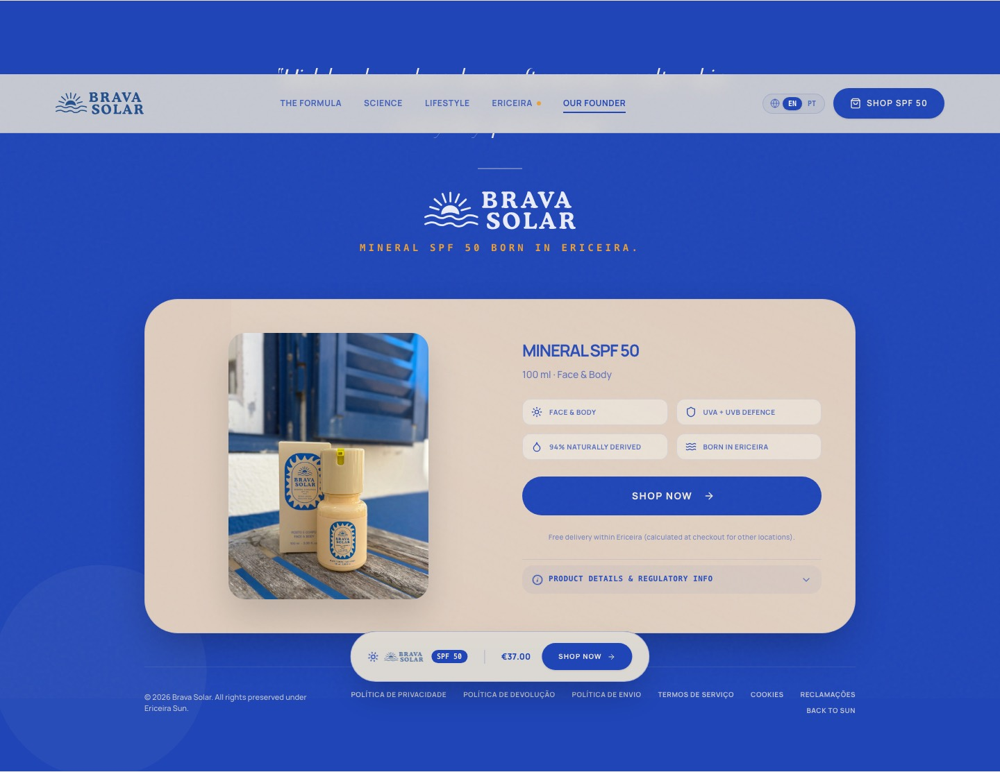
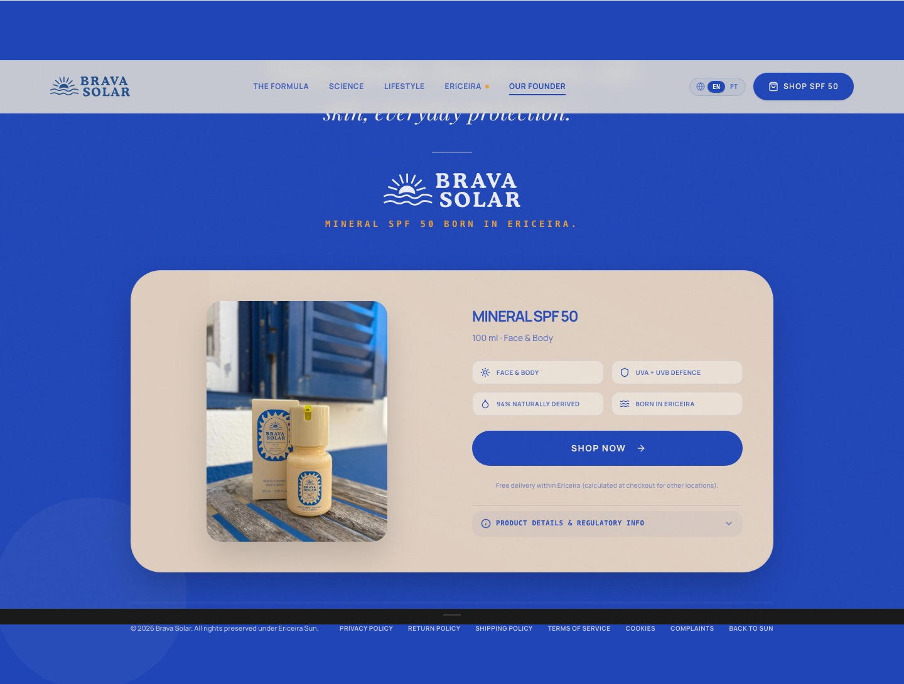

Это превью, не боевой сайт. Живой bravasolar.com не менялся. Если всё ок — выкатим эти правки всем.
Открыть превью сайтаСтарый курсив почти растворялся. Теперь Playfair Display Italic — темнее, читается, фраза компактнее.


Слева кружок вытягивается, вопрос прыгает, текст КАПСОМ. Справа кружок 32×32, вопрос на месте, раскрытие плавное.
Раньше только Keep Browsing. Теперь можно сразу добавить SPF 50. Shop Now не накидывает штуки, если товар уже в корзине — только открывает её.


Липкая плашка больше не лежит на карточке покупки. Юридические ссылки на английском.

